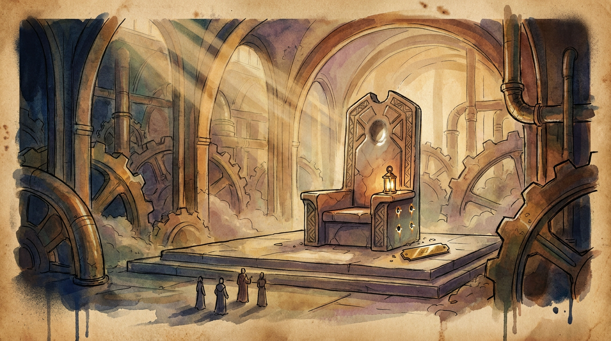

The Huang Vacancy
Nvidia's board courts Arm's Rene Haas as it hunts a permanent chief
Nvidia's board has approached Arm chief executive Rene Haas, a former Nvidia executive, as it searches for a permanent replacement for Jensen Huang, who resigned this week with CFO Collette Kress running the company as interim CEO and Harvey Jones installed as first board chair. The vacuum sits under the whole AI buildout: Nvidia's GPUs and its Isaac and GR00T stacks underpin most datacenter and humanoid robotics programs, and investors already expect Kress to be far more conservative with startup checks.